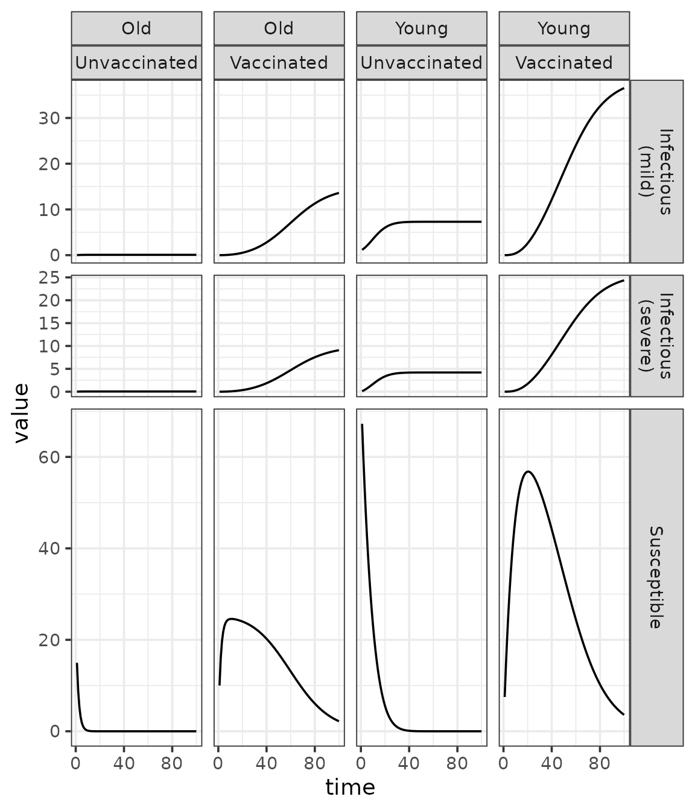
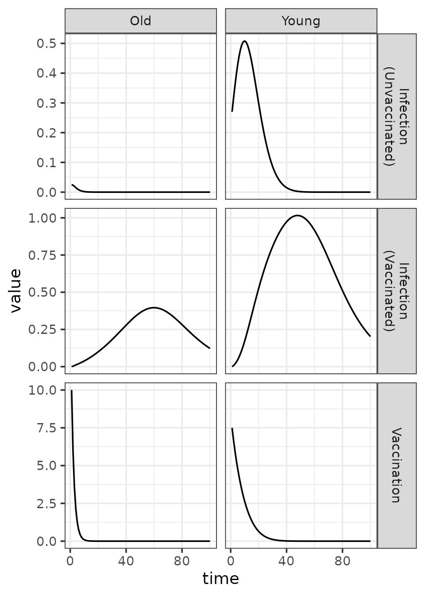
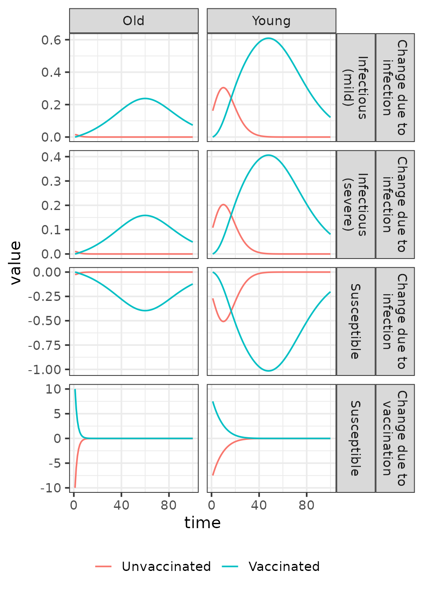

Structured SI Model with Kronecker Products in macpan2
Source:vignettes/kronecker.Rmd
kronecker.RmdIntroduction
This document illustrates how to implement structured compartmental
models in macpan2 using Kronecker products to define state
vectors, parameter matrices, and flows over stratified dimensions. As an
example, we stratify an SI model along the following dimensions: age
group, vaccination status, and symptom severity.
Utilities and Packages
We load the necessary packages and define some utility functions that simplify the construction of named vectors and matrices over these stratification dimensions.
We overwrite the base R Kronecker product operator,
%x%, to consistently preserve row and column names. This
operator will be used often when defining model structure. It returns
the same numerical results as base R, but with consistently
named rows and columns.
`%x%` <- mp_kronecker_operator(`*`)The ones_vec() utility creates a named vector of ones
over the cross-product of the input character vectors (strata). It uses
Kronecker products to ensure the names follow the same ordering
convention as Kronecker-structured vectors and matrices elsewhere in the
model.
ones_vec = function(...) {
nms = list(...)
vecs = lapply(nms, \(x) setNames(rep(1, length(x)), x))
Reduce(`%x%`, vecs)
}The diagonal() utility is much like the base-R
diag() function, but takes its row and column names from
the names of the input vector.
diagonal = function(x) {
if (is.matrix(x))
stop("can only produce a square diagonal matrix for a vector")
if (length(x) == 1) return(x)
nms = names(x)
x = diag(x)
dimnames(x) = list(nms, nms)
return(x)
}The identity() function takes character vectors and
returns an identity matrix over their Cartesian product. It uses
ones_vec() and diagonal() to define the
dimension names and place ones on the diagonal.
identity = function(...) ones_vec(...) |> diagonal()The ones_col() (ones_row()) function takes
character vectors and returns a column (row) vector of ones, with row
(column) names based on the Cartesian product of the input strata.
Here are a few examples.
identity(age, vax)## young.unvax young.vax old.unvax old.vax
## young.unvax 1 0 0 0
## young.vax 0 1 0 0
## old.unvax 0 0 1 0
## old.vax 0 0 0 1
ones_col(age, vax, symp)## [,1]
## young.unvax.mild 1
## young.unvax.severe 1
## young.vax.mild 1
## young.vax.severe 1
## old.unvax.mild 1
## old.unvax.severe 1
## old.vax.mild 1
## old.vax.severe 1
ones_row(vax)## unvax vax
## [1,] 1 1The ones_col(), ones_row(), and
identity() functions make it easier to build vectors and
matrices that align with stratified model dimensions, enabling clear and
consistent operations like summing over strata or selecting specific
blocks.
Initial State Vectors
We now use Kronecker products to initialize the state vectors
S (susceptible) and I (infectious) over the
stratification dimensions.
S = c(young = 75, old = 25) %x% c(unvax = 1, vax = 0)
I = c(young = 1, old = 0) %x% c(unvax = 1, vax = 0) %x% c(mild = 1, severe = 0)
print(S)## young.unvax young.vax old.unvax old.vax
## 75 0 25 0
print(I)## young.unvax.mild young.unvax.severe young.vax.mild young.vax.severe
## 1 0 0 0
## old.unvax.mild old.unvax.severe old.vax.mild old.vax.severe
## 0 0 0 0Model Parameters
We define default values for the following parameters:
- Baseline transmission
- Vaccination rates
- Vaccine efficacy
- Contact matrix
- Symptom severity probabilities
- Multiplicative effects of stratification on susceptibility and infectivity.
beta = 0.4
contact_matrix = rbind(
young = c(young = 0.8, old = 0.2),
old = c(young = 0.2, old = 0.8)
)
symp_probs = rbind(mild = 0.6, severe = 0.4)
susceptibility_age = rbind(young = 0.9, old = 1)
infectivity_age = cbind(young = 1, old = 0.9)
infectivity_vax = cbind(unvax = 1, vax = 0.8)
infectivity_symp = cbind(mild = 0.95, severe = 1)
vax_rates = rbind(young = 0.1, old = 0.4)
VE = rbind(unvax = 0, vax = 0.8)Note that instead of c for constructing vectors, we use
rbind (for column vectors) and cbind (for row
vectors). It is good practice to be explicit about the orientation of
vectors when Kronecker products are involved.
Derived State Vectors
To define flows and compute quantities like force of infection or vaccination rates, we often need to aggregate or restrict the original state vectors by strata. Derived state vectors let us isolate relevant subpopulations or repeat totals to match dimensional structure in downstream operations.
M_unvax = identity(age) %x% cbind(unvax = 1, vax = 0)
M_S = identity(age) %x% ones_row(vax)
M_I = identity(age) %x% ones_row(vax, symp)
M_N = ones_col(vax, symp)
S_unvax = M_unvax %*% S
N_age = (M_S %*% S) + (M_I %*% I)
N = N_age %x% M_N
print(S_unvax)## [,1]
## young 75
## old 25
print(N_age)## [,1]
## young 76
## old 25
print(N)## young.unvax.mild young.unvax.severe young.vax.mild young.vax.severe
## 76 76 76 76
## old.unvax.mild old.unvax.severe old.vax.mild old.vax.severe
## 25 25 25 25Note that N repeats the total population size within
each age group to match the structure of the force of infection.
S_unvax isolates the unvaccinated susceptible compartments,
which are the only ones eligible for vaccination flows.
Per-Capita Transmission Matrix
We construct the full per-capita transmission matrix by combining component matrices using Kronecker products and elementwise multiplication.
B_age = (
beta
* contact_matrix
* (susceptibility_age %x% infectivity_age)
)
B_vax = (1 - VE) %x% infectivity_vax
B_symp = infectivity_symp
B = B_age %x% B_vax %x% B_symp
print(B_age)## young old
## young 0.288 0.0648
## old 0.080 0.2880
print(B_vax)## unvax vax
## unvax 1.0 0.80
## vax 0.2 0.16
print(B_symp)## mild severe
## [1,] 0.95 1
print(B)## young.unvax.mild young.unvax.severe young.vax.mild young.vax.severe
## young.unvax 0.27360 0.2880 0.218880 0.23040
## young.vax 0.05472 0.0576 0.043776 0.04608
## old.unvax 0.07600 0.0800 0.060800 0.06400
## old.vax 0.01520 0.0160 0.012160 0.01280
## old.unvax.mild old.unvax.severe old.vax.mild old.vax.severe
## young.unvax 0.061560 0.06480 0.0492480 0.051840
## young.vax 0.012312 0.01296 0.0098496 0.010368
## old.unvax 0.273600 0.28800 0.2188800 0.230400
## old.vax 0.054720 0.05760 0.0437760 0.046080The per-capita transmission matrix maps infectious compartments to susceptible compartments and determines the force of infection associated with each susceptible stratum. The row names give the susceptible strata, and the column names the infectious strata.
Per-Capita Force of Infection
The force of infection is computed by multiplying the per-capita transmission matrix by the normalized infectious population.
## [,1]
## young.unvax 0.00360
## young.vax 0.00072
## old.unvax 0.00100
## old.vax 0.00020Absolute Flows
We compute total flows due to infection and vaccination by multiplying per-capita rates by the relevant state vectors.
infection = foi * S
vaccination = vax_rates * S_unvax
print(infection)## [,1]
## young.unvax 0.270
## young.vax 0.000
## old.unvax 0.025
## old.vax 0.000
print(vaccination)## [,1]
## young 7.5
## old 10.0Allocation Matrices
In structured models, flows often act on families of compartments rather than individual compartments. This can obscure which specific sub-compartments are gaining or losing individuals. Allocation matrices resolve this by mapping flow vectors into change vectors that align with the structure of state vectors.
They allow us to:
- Distribute outflows from a compartment to multiple destination compartments (e.g., infections split by symptom severity).
- Apply signed changes within a state vector (e.g., moving individuals from unvaccinated to vaccinated compartments within the susceptible state vector).
This ensures that each flow is properly aligned with the compartments it affects.
A_infection = identity(age, vax) %x% symp_probs
A_vaccination = identity(age) %x% rbind(unvax = -1, vax = 1)
infection_S = infection
infection_I = A_infection %*% infection
vaccination_S = A_vaccination %*% vaccination
print(infection_S)## [,1]
## young.unvax 0.270
## young.vax 0.000
## old.unvax 0.025
## old.vax 0.000
print(infection_I)## [,1]
## young.unvax.mild 0.162
## young.unvax.severe 0.108
## young.vax.mild 0.000
## young.vax.severe 0.000
## old.unvax.mild 0.015
## old.unvax.severe 0.010
## old.vax.mild 0.000
## old.vax.severe 0.000
print(vaccination_S)## [,1]
## young.unvax -7.5
## young.vax 7.5
## old.unvax -10.0
## old.vax 10.0Euler Step Update
Using the change vectors produced using products of allocation matrices and state vectors, we update the original state vectors with a forward Euler step.
S_new = S - infection_S + vaccination_S
I_new = I + infection_I
print(S_new)## [,1]
## young.unvax 67.230
## young.vax 7.500
## old.unvax 14.975
## old.vax 10.000
print(I_new)## [,1]
## young.unvax.mild 1.162
## young.unvax.severe 0.108
## young.vax.mild 0.000
## young.vax.severe 0.000
## old.unvax.mild 0.015
## old.unvax.severe 0.010
## old.vax.mild 0.000
## old.vax.severe 0.000Model Specification
We formalize the model specification with
mp_tmb_model_spec, defining the derived quantities, flows,
and update rules.
spec = mp_tmb_model_spec(
before = list(
B_age ~ (
beta
* contact_matrix
* (susceptibility_age %x% infectivity_age)
)
, B_vax ~ (1 - VE) %x% infectivity_vax
, B_symp ~ infectivity_symp
, B ~ B_age %x% B_vax %x% B_symp
),
during = list(
# derived state vectors
N_age ~ (M_S %*% S) + (M_I %*% I)
, N ~ N_age %x% M_N
, S_unvax ~ M_unvax %*% S
# state-dependent per-capita rates
, foi ~ B %*% (I / N)
# absolute flow vectors
, infection ~ foi * S
, vaccination ~ vax_rates * S_unvax
# absolute change vectors
, infection_S ~ -infection
, infection_I ~ A_infection %*% infection
, vaccination_S ~ A_vaccination %*% vaccination
# state update (euler step)
, S ~ S + infection_S + vaccination_S
, I ~ I + infection_I
),
# initial state vectors
inits = nlist(S, I),
default = nlist(
# parameter scalars
beta
# parameter vectors
, vax_rates, VE
, susceptibility_age
, infectivity_age, infectivity_vax, infectivity_symp
# parameter matrices
, contact_matrix
# state vector transformation matrices
, M_S, M_I, M_N, M_unvax
# allocation matrices
, A_infection, A_vaccination
# absolute flow and change vectors
# - included here so that row names can be used
# in simulated trajectories
# - if removed from this list, the simulations
# will use generic integer IDs for each
# stratum
, infection, vaccination
, infection_S, infection_I, vaccination_S
)
)Simulation and Plots
We simulate the model over time and visualize the resulting trajectories of the state vectors and flow rates by stratification. The first step is to generate the simulations.
## state vectors
state = c("S", "I")
## absolute flow rates
flow = c("infection", "vaccination")
# absolute change vectors
change = c("infection_S", "infection_I", "vaccination_S")
traj = (spec
|> mp_simulator(time_steps = 100, outputs = c(state, flow, change))
|> mp_trajectory()
## separate row names into
## names for each stratum
|> separate_wider_delim(row
, delim = "."
, names = model_dimensions
, too_few = "align_start"
)
## make stratum names easier to read
|> mutate(vax = case_when(
vax == "unvax" ~ "Unvaccinated"
, vax == "vax" ~ "Vaccinated"
))
|> mutate(age = str_to_title(age))
)
print(traj)## # A tibble: 3,400 × 7
## matrix time age vax symp col value
## <chr> <int> <chr> <chr> <chr> <chr> <dbl>
## 1 infection 1 Young Unvaccinated NA "" 0.27
## 2 infection 1 Young Vaccinated NA "" 0
## 3 infection 1 Old Unvaccinated NA "" 0.025
## 4 infection 1 Old Vaccinated NA "" 0
## 5 vaccination 1 Young NA NA "" 7.5
## 6 vaccination 1 Old NA NA "" 10
## 7 infection_S 1 Young Unvaccinated NA "" -0.27
## 8 infection_S 1 Young Vaccinated NA "" 0
## 9 infection_S 1 Old Unvaccinated NA "" -0.025
## 10 infection_S 1 Old Vaccinated NA "" 0
## # ℹ 3,390 more rowsHere is a plot of the state vector trajectories.
(traj
|> filter(matrix %in% state)
## make names easier to read
|> mutate(state = case_when(
matrix == "S" ~ "Susceptible"
, matrix == "I" ~ "Infectious"
))
|> mutate(state = if_else(
state == "Infectious"
, sprintf("%s\n(%s)", state, symp)
, state
))
## plot
|> ggplot()
+ aes(time, value)
+ geom_line()
+ facet_grid(state ~ age + vax, space = 'free', scales = 'free')
+ scale_x_continuous(breaks = c(0, 40, 80))
+ theme_bw()
)
Structured SI models have the potential to become more interesting relative to the unstructured version. For a simple example in the above plot, two susceptible compartments display intermediate peaks that reflect a balance between vaccination and infection processes. In contrast, the susceptible compartment in the unstructured SI model can only decrease over time. You could produce this plot for different values of the parameters (e.g., vaccine efficacy) to explore how these differences affect dynamics.
We can make a similar plot of the absolute rates of flow (per time
step) among compartments. These flow rates are stored in the
infection and vaccination vectors.
(traj
|> filter(matrix %in% flow)
|> mutate(matrix = str_to_title(matrix))
|> mutate(flow = if_else(
matrix == "Infection"
, sprintf("%s\n(%s)", matrix, vax)
, matrix
))
|> ggplot()
+ aes(time, value)
+ geom_line()
+ facet_grid(flow ~ age, scales = 'free')
+ scale_x_continuous(breaks = c(0, 40, 80))
+ theme_bw()
)
In structured models, absolute flow rates translate into
process-specific rates of change of state variables in a more complex
way than in unstructured models. One example of this added complexity is
that flows alone do not determine how individuals are distributed across
symptom status compartments. To address this, allocation matrices –
A_infection and A_vaccination – are used to
map each process-specific flow onto the appropriate rate of change in
the state variables. These matrices define how the flows are distributed
across strata, such as symptom status. The plot below illustrates the
resulting changes in the state vector.
(traj
|> filter(matrix %in% change)
|> separate_wider_delim(matrix
, delim = "_"
, names = c("flow", "state")
)
|> mutate(state = case_when(
state == "S" ~ "Susceptible"
, state == "I" ~ "Infectious"
))
|> mutate(state = if_else(
state == "Infectious"
, sprintf("%s\n(%s)", state, symp)
, state
))
|> mutate(flow = sprintf("Change due to\n%s", flow))
|> ggplot()
+ aes(time, value, colour = vax)
+ geom_line()
+ facet_grid(flow + state ~ age, scales = 'free')
+ scale_x_continuous(breaks = c(0, 40, 80))
+ theme_bw()
+ guides(colour = guide_legend(position = "bottom", title = ""))
)
This plot reveals how susceptible individuals are allocated across symptom status compartments. By using color to represent vaccination status—instead of faceting into separate panels—it simultaneously highlights differences in rates of change across vaccination groups.
Limitations
One cannot use alternate state update methods with structured models, although this is on the roadmap.